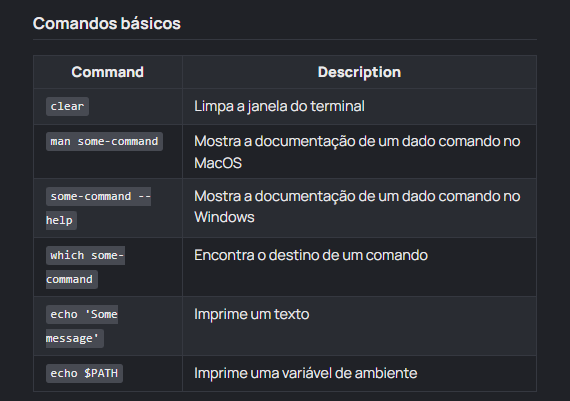
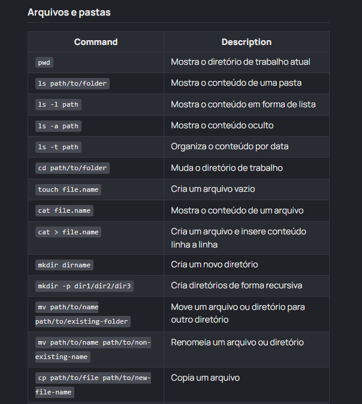
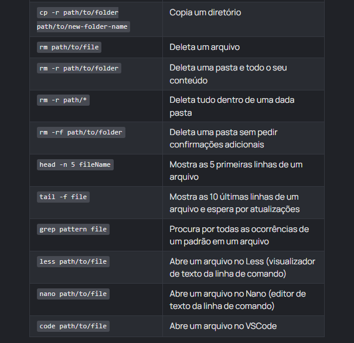
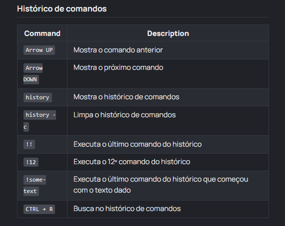
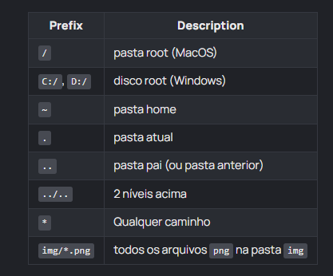

Theory
Intro
Aqui teremos os alguns comandos do git.
Aqui teremos os alguns comandos do git.
Git - Basicos:

Arquivos e Pastas Part 01:

Arquivos e Pastas Part 02:

Historico de Comandos:

Caminhos:
